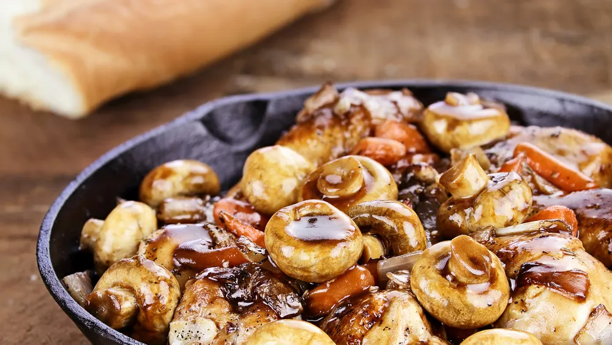
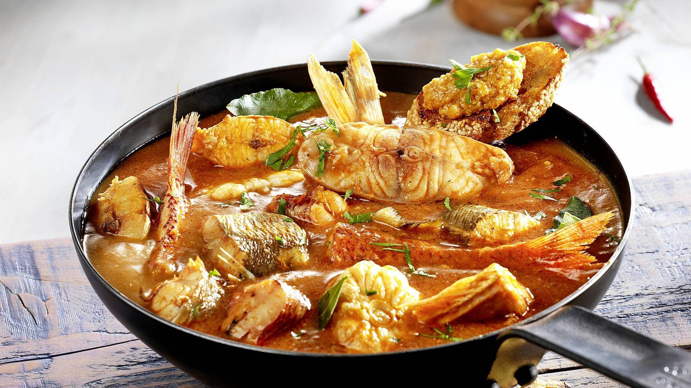

La gastronomía francesa es un viaje culinario a través de un país donde la tradición, la sofisticación y los sabores refinados se entrelazan. Desde las elegantes calles de París hasta los pintorescos pueblos de la Provenza, cada región de Francia ofrece una experiencia culinaria única que refleja su rica cultura y herencia.
Coq au Vin
Este clásico de la cocina francesa consiste en pollo cocinado a fuego lento en vino tinto, típicamente de Borgoña, junto con champiñones, cebollas y panceta. El resultado es un plato de sabor profundo y sofisticado que es muy apreciado por los amantes de la gastronomía francesa.
Bouillabaisse
Originario de Marsella, este guiso de pescado es un emblema de la cocina mediterránea francesa. Se prepara con una variedad de pescados y mariscos frescos, junto con hierbas y especias locales, y se sirve con rouille, una salsa de ajo y azafrán, sobre crujiente pan tostado.
Ratatouille
Este plato provenzal se ha convertido en un símbolo de la cocina francesa. Consiste en una mezcla de vegetales frescos como berenjenas, calabacines, pimientos y tomates, cocinados lentamente con hierbas de Provenza. Es un platillo saludable, colorido y lleno de sabor que representa la esencia de la cocina francesa.